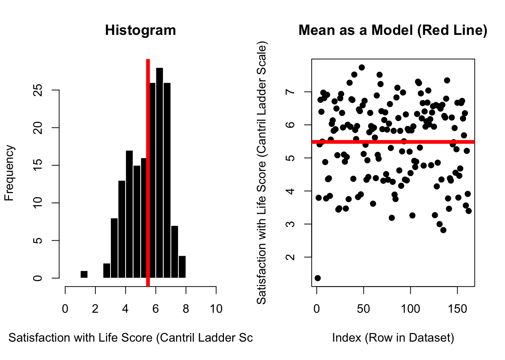
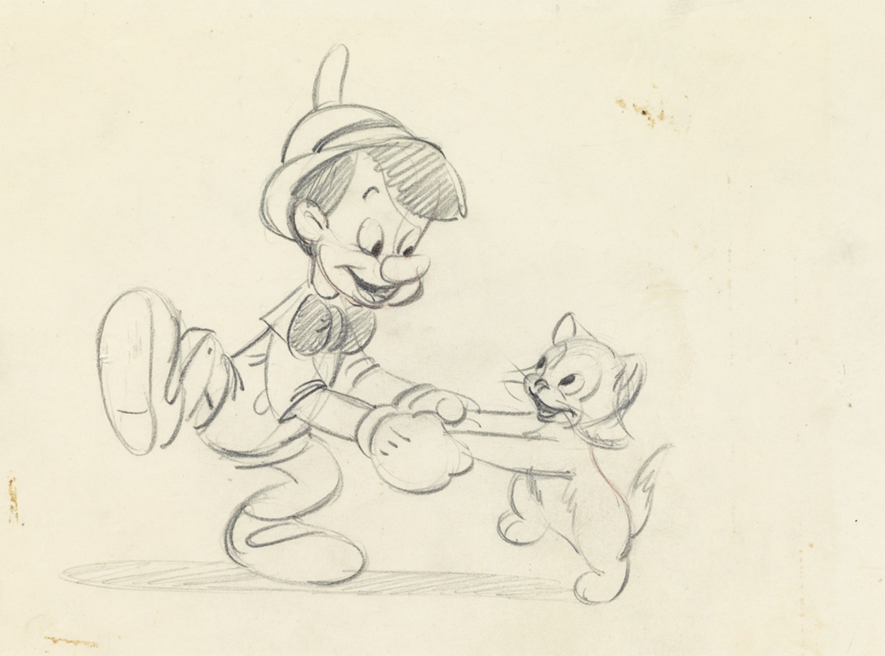
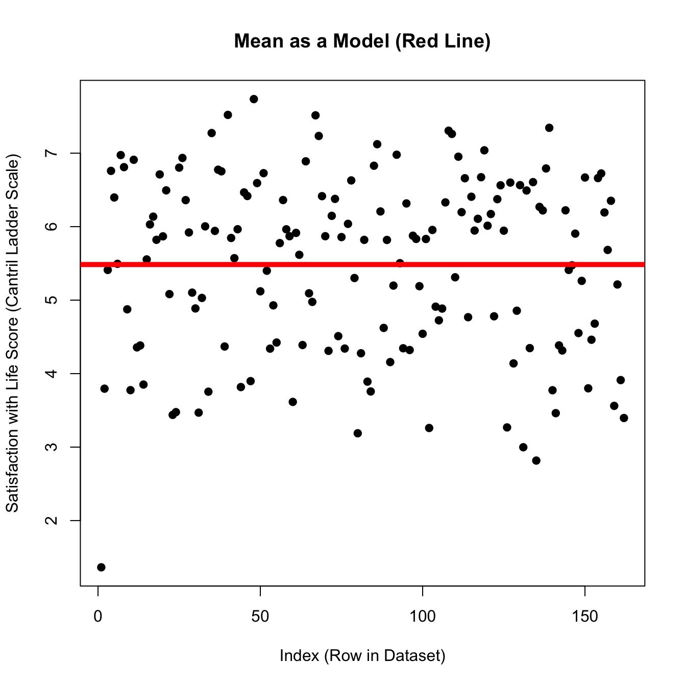
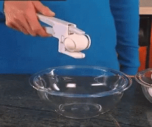
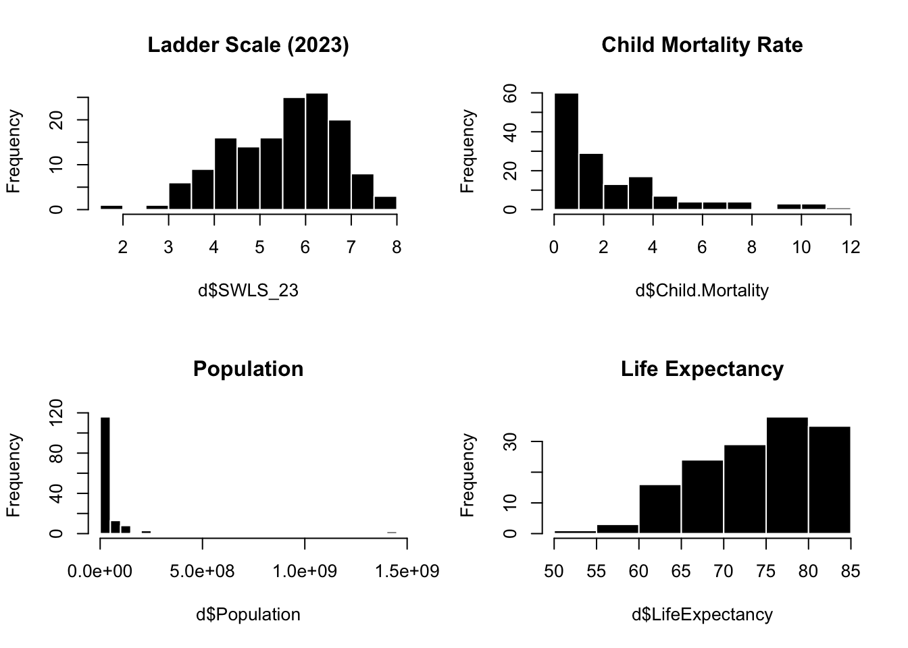
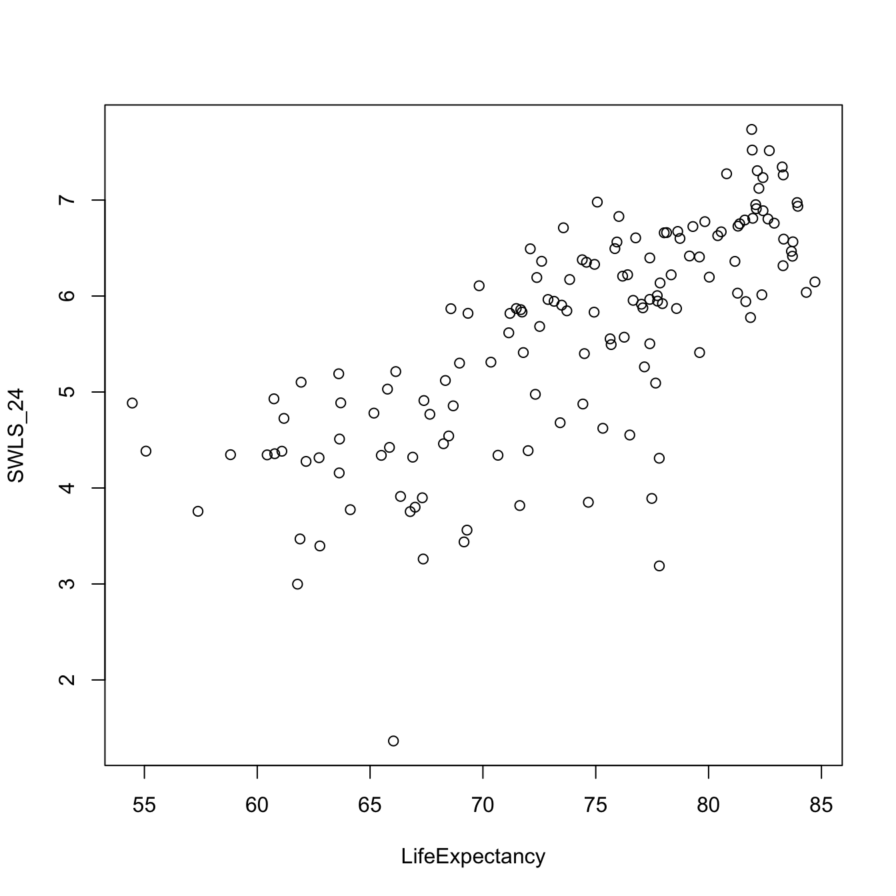
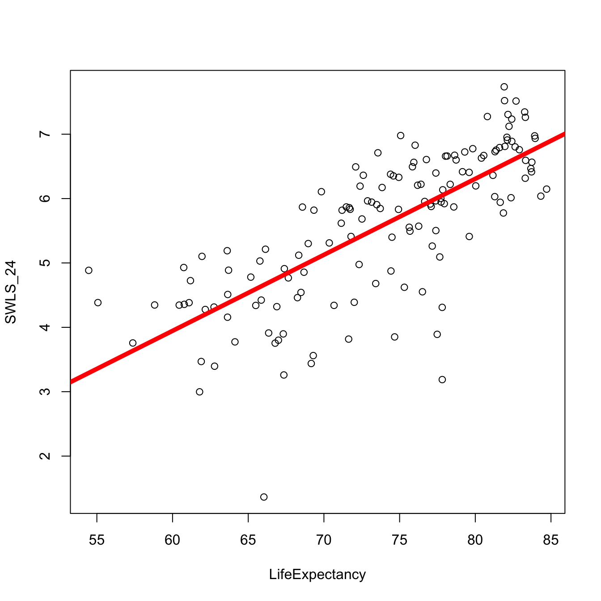
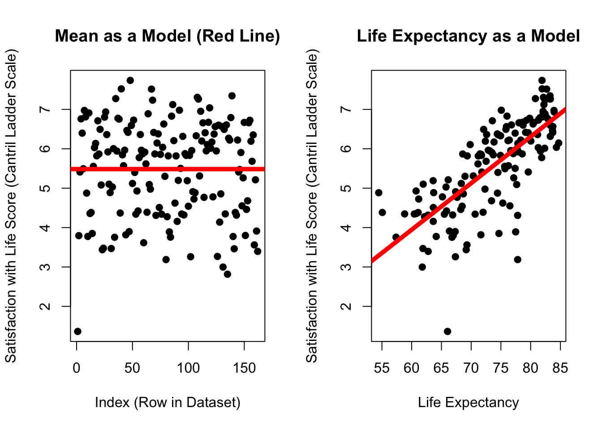
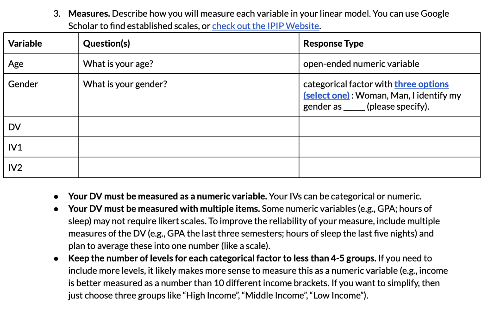
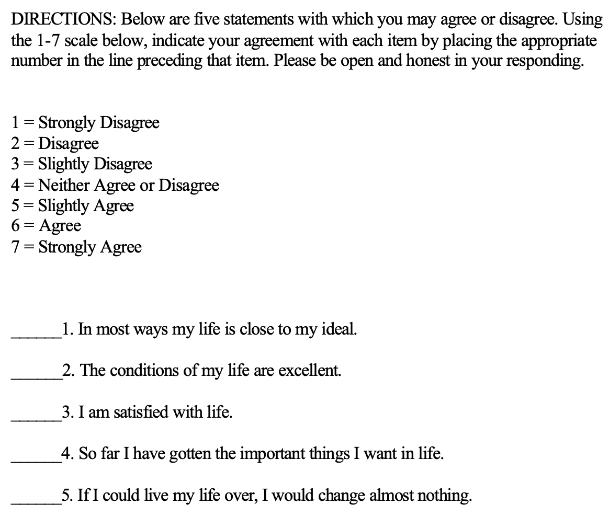

Introduction to Linear Models
CHECK-IN : Post Mini-Exam Survey!

The Linear Model : Prediction is a Line
RECAP : The Mean as a Model (with Error)
DISCUSS. Measurement Error. The Cantril Ladder Score asks people to rank themselves on a ladder in terms of their well-being. What do y’all think of this measure? What benefits / problems are there of this approach? What questions do you have?
RECAP : The Mean as Prediction?
\(\huge y_i = \hat{Y} + \epsilon_i\)
\(\Large y_i\) = the DV = the individual’s actual score we are trying to predict.
on the graph: each individual dot
\(\Large \hat{Y}\) = our prediction (the mean).
on the graph: the solid red line
\(\Large \epsilon\) = residual error = difference between predicted and actual values of y
on the graph: the distance between each dot and the line.
plot(d$SWLS_24,
main = "Mean as a Model (Red Line)",
pch = 19,
xlab = "Index (Row in Dataset)",
ylab = "Satisfaction with Life Score (Cantril Ladder Scale)")
abline(h = mean(d$SWLS_24, na.rm = T), lwd = 5, col = 'red')
RECAP : The Mean as Prediction With Error
\(\huge \epsilon_i = y_i - \hat{Y}\)
Error = actual score - prediction (the mean)
residual <- d$SWLS_24 - mean(d$SWLS_24, na.rm = T)
SST <- sum(residual^2, na.rm = T)
SST[1] 233.827- This number is critical - quantified error in our prediction.
- This number makes no sense (total unsquared error??!?!)
- sd gives some context (average error)
- use number as a starting place to see if we can make better predictions
plot(d$SWLS_24,
main = "Mean as a Model (Red Line)",
pch = 19,
xlab = "Index (Row in Dataset)",
ylab = "Satisfaction with Life Score (Cantril Ladder Scale)")
abline(h = mean(d$SWLS_24, na.rm = T), lwd = 5, col = 'red')
KEY IDEA : The mean is an okay starting place for our predictions, but we can try to do better!
| the mean | the linear model ™ © |
 |
DISCUSS : Making Predictions
THINK ABOUT A LINEAR MODEL : how do you think the variables (below) would help (or not help) us predict the happiness of a country in 2024? Why / why not???
THINK ABOUT SOURCES OF DATA. What other variables do you think would be important to include in this dataset?
par(mfrow = c(2,2))
hist(d$SWLS_23, col = "black", bor = "White", main = "Ladder Scale (2023)")
hist(d$Child.Mortality, col = "black", bor = "White", main = "Child Mortality Rate")
hist(d$Population, col = "black", bor = "White", main = "Population", breaks = 40)
hist(d$LifeExpectancy, col = "black", bor = "White", main = "Life Expectancy")
TIME TO PLAY : WHERE’S THE LINE
plot(SWLS_24 ~ LifeExpectancy, data = d)
mod <- lm(SWLS_24 ~ LifeExpectancy, data = d) # defines the model; saves as mod
plot(SWLS_24 ~ LifeExpectancy, data = d) # graphs the relationship.
abline(mod, lwd = 5, col = 'red') # draws a red line of width five based on mod
What’s Going On : It’s a Line
\(\Huge y_i = a + b_1 * X_i + \epsilon_i\)
round(coef(mod), 2) (Intercept) LifeExpectancy
-3.14 0.12 mod <- lm(SWLS_24 ~ LifeExpectancy, data = d)
plot(SWLS_24 ~ LifeExpectancy, data = d)
abline(mod, lwd = 5, col = 'red') 
\(\Large y_i\) = the DV = each actual score on the DV.
on the graph:** each dot on the y-axis
\(\Large a\) = the intercept = starting place for our prediction (“the predicted value of y when all x values are zero”.)
on the graph:** the value of the line at X = 0
\(\Large X_i\) = the IV = the actual score on the IV.
on the graph: the value of each dot on the x-axis
\(\Large b_1\) = the slope = an adjustment to our prediction of y based changes in x
on the graph: how much the line increases in y value when x-values increase by 1 unit.
\(\Large \epsilon_i\) = residual error = the distance between actual y and predicted y
on the graph: the distance between each individual data point and the line.
The Linear Model : Error in Our Predictions
Which model has dots that are closer to the line??? (Mean of Satisfaction or Life Expectancy)
par(mfrow = c(1,2))
plot(d$SWLS_24,
main = "Mean as a Model (Red Line)",
pch = 19,
xlab = "Index (Row in Dataset)",
ylab = "Satisfaction with Life Score (Cantril Ladder Scale)")
abline(h = mean(d$SWLS_24, na.rm = T), lwd = 5, col = 'red')
plot(SWLS_24 ~ LifeExpectancy, data = d, pch = 19, main = "Life Expectancy as a Model",
ylab = "Satisfaction with Life Score (Cantril Ladder Scale)",
xlab = "Life Expectancy")
abline(mod, lwd = 5, col = 'red') 
The Linear Model : Quantifying Error
par(mfrow = c(1,2))
plot(d$SWLS_24,
main = "Mean as a Model (Red Line)",
pch = 19,
xlab = "Index (Row in Dataset)",
ylab = "Satisfaction with Life Score (Cantril Ladder Scale)")
abline(h = mean(d$SWLS_24, na.rm = T), lwd = 5, col = 'red')
plot(SWLS_24 ~ LifeExpectancy, data = d, pch = 19, main = "Life Expectancy as a Model",
ylab = "Satisfaction with Life Score (Cantril Ladder Scale)",
xlab = "Life Expectancy")
abline(mod, lwd = 5, col = 'red') 
par(mfrow = c(1,2))
plot(d$SWLS_24,
main = "Mean as a Model (Red Line)",
pch = 19,
xlab = "Index (Row in Dataset)",
ylab = "Satisfaction with Life Score (Cantril Ladder Scale)")
abline(h = mean(d$SWLS_24, na.rm = T), lwd = 5, col = 'red')
plot(SWLS_24 ~ LifeExpectancy, data = d, pch = 19, main = "Life Expectancy as a Model",
ylab = "Satisfaction with Life Score (Cantril Ladder Scale)",
xlab = "Life Expectancy")
abline(mod, lwd = 5, col = 'red') 
SWLS24 <- mod$model$SWLS_24 # using data that also have life expectancy
residual <- SWLS24 - mean(SWLS24) # error
SST <- sum(residual^2, na.rm = T) # sum of squared errors
SST # total sum of squared errors[1] 195.867SSM <- sum(mod$residuals^2) # R saves the residuals for you
SSM # hooray![1] 89.63457Some math helps us evaluate.
SST - SSM # the total difference[1] 106.2324(SST - SSM)/SST # the relative difference[1] 0.5423702summary(mod)$r.squared # R^2[1] 0.5423702par(mfrow = c(1,2))
plot(d$SWLS_24,
main = "Mean as a Model (Red Line)",
pch = 19,
xlab = "Index (Row in Dataset)",
ylab = "Satisfaction with Life Score (Cantril Ladder Scale)")
abline(h = mean(d$SWLS_24, na.rm = T), lwd = 5, col = 'red')
plot(SWLS_24 ~ LifeExpectancy, data = d, pch = 19, main = "Life Expectancy as a Model",
ylab = "Satisfaction with Life Score (Cantril Ladder Scale)",
xlab = "Life Expectancy")
abline(mod, lwd = 5, col = 'red') 
BREAK TIME : MEET BACK AT 3:30
PART 2 : DEFINING CONTINUOUS MEASURES
Milestone #2 (Measures)

The Likert Scale
Example : Satisfaction With Life Scale

scale : The variable that you want to measure as a continuous variable.
items : The specific question(s) in the scale. Each item measures some aspect of the variable the researcher is interested in.
positively keyed items : An item that measures the high end of the scale, where answering “yes” to the question means you are high on this variable.
negatively keyed items : An item that measures the low end of the scale, where answering “yes” to the question means you are low on the variable.
response scale : How people answer the scale items.